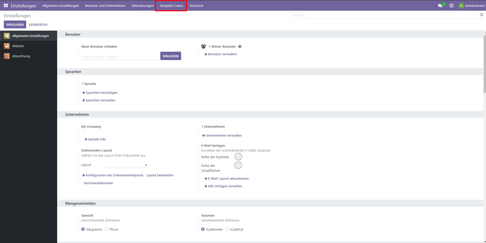
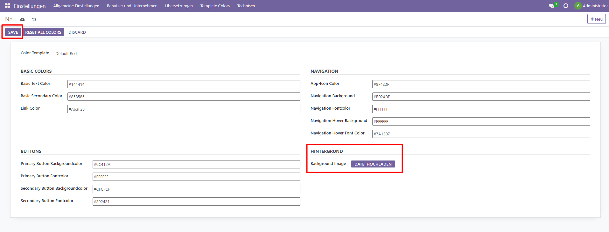

German / Deutsch
Technischer Name: eq_ownerp_ui
Das Modul ermöglicht es Ihnen, die Farben des Odoo-Backends und die Hintergrundgrafik direkt in Odoo zu ändern. (CE & EE)
Installation
Um dieses Modul zu installieren, müssen Sie nur das Modul auswählen und sicherstellen, dass Ihre Abhängigkeiten vorhanden sind.
Konfiguration
In der Einstellungen-App unter Vorlagenfarben -> Farben können Sie die Farben für das Odoo-System festlegen.
Hier können Sie die Farben für das Odoo-System auswählen oder eine Vorlage auswählen.
Außerdem können Sie ein Bild für den Hintergrund hochladen.
Übernehmen Sie die Änderungen, um die Farben zu ändern.
Unter Vorlagenfarben -> Vorlagen können Sie Vorlagen für die Farben speichern.
Abhängigkeiten
base_setup,web